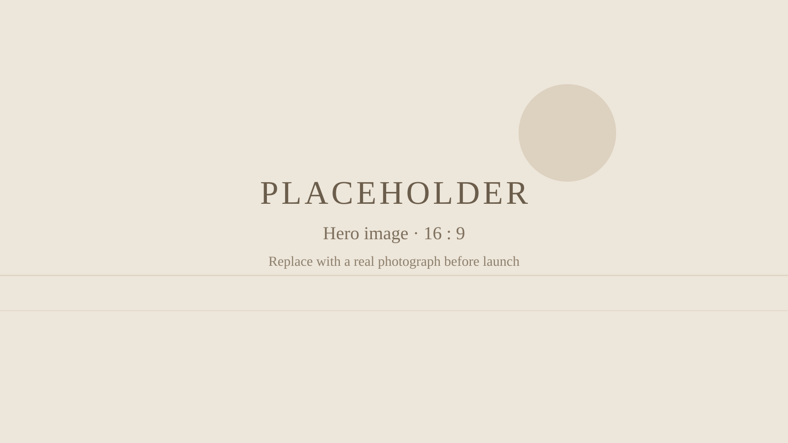
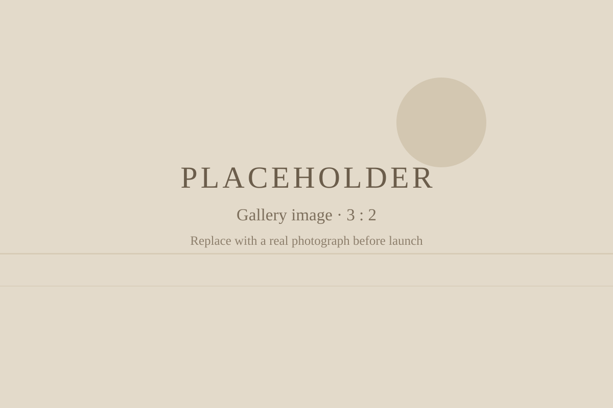
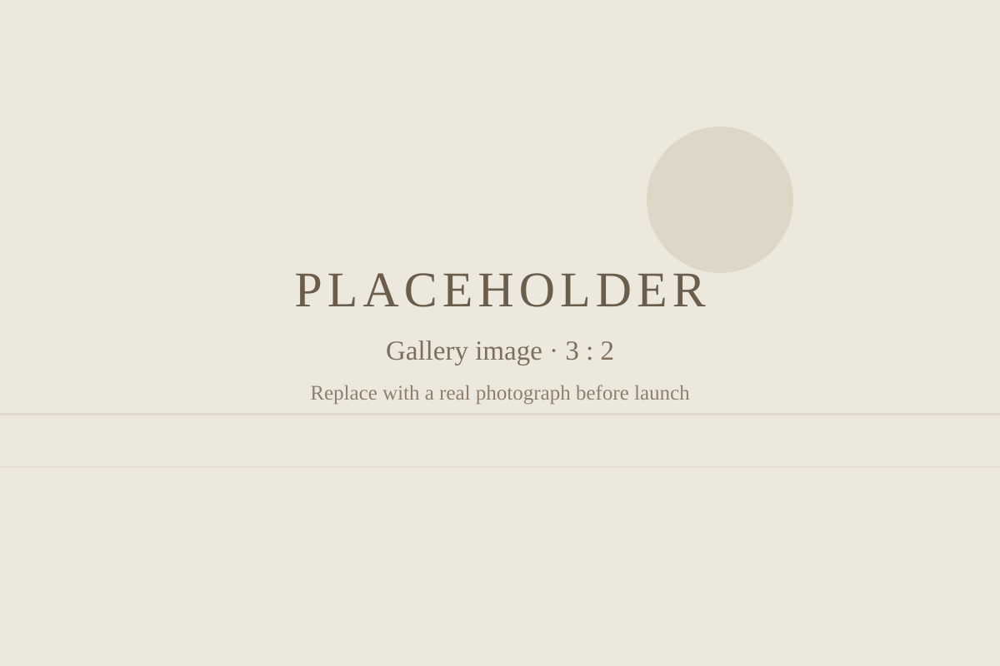

Provo & Utah wedding photography
Weddings
Your wedding day, photographed honestly — the people, the place, and the moments you didn't see happening.
The session look
Relaxed direction, real moments.
Wedding photos should look like your day felt. That means posing when it counts — portraits, family groups, the ceremony — and stepping back the rest of the time so the laughter, the tears, and the in-between moments happen on their own.
Light, natural color and clean composition carry the whole gallery, so the photos still feel true years later.
What to expect
From first message to finished photos.
- Plan togetherWe talk through your timeline, locations, and the photos that matter most to you — including a family and group photo plan, so nobody is hunting for relatives on the day.
- The day itselfCoverage follows the plan but stays flexible. Direction is calm and natural, and the schedule leaves room for the moments that can't be planned.
- Your finished photosYour edited photos are delivered as an online gallery. Delivery details are confirmed when you book.
Planning details
Good to know before you book.
- Locations: weddings throughout Utah, based in Provo, with travel as far as Farmington for photo work.
- Timeline: we build the photo timeline around your ceremony, light, and venue — not the other way around.
- Family & group photos: send your list ahead of time and we'll work through it efficiently.
- Engagements: many couples add a proposal or engagement session first — see proposals & engagements.
Gallery
Weddings around Utah



Gallery images shown here are placeholders and will be replaced with real client work before launch.
Questions
Wedding FAQ
Where in Utah do you photograph weddings?
Trevor Adair Photography is based in Provo and photographs weddings throughout Utah, traveling as far as Farmington for photo work.
How do we book a wedding date?
Send a message through the contact page with your date, venue or location, and a little about your day. Availability is confirmed from your inquiry.
What does the wedding day itself look like?
We plan the timeline together beforehand, including family and group photos, so the day itself stays relaxed. Direction is natural — posed when it counts, unposed the rest of the time.
Do you also photograph engagements?
Yes. Proposal and engagement sessions are a separate service — see the proposals page for details.
How much does wedding photography cost?
Full-day wedding collections start at $1,925. Contact Trevor Adair Photography for availability and booking details.
Your date
Let's talk about your wedding.
Share your date, venue, and what you're dreaming up — we'll take it from there.